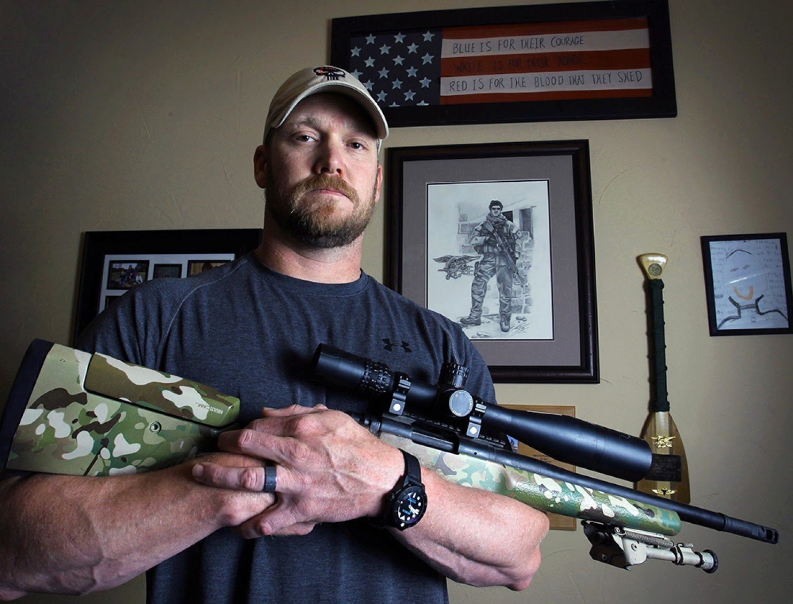

United States Navy SEAL Veteran and Sniper
Kyle served four tours in the Iraq War and was awarded several commendations for acts of heroism and meritorious service in combat. He was awarded one Silver Star Medal, four Bronze Star Medals with "V" devices, a Navy and Marine Corps Achievement Medal and numerous other unit and personal awards. Kyle was honorably discharged from the U.S. Navy in 2009 and published his bestselling autobiography, American Sniper, in 2012. An eponymous film adaptation of Kyle's book, directed by Clint Eastwood, was released two years later. On February 2, 2013, Kyle was murdered by Eddie Ray Routh at a shooting range near Chalk Mountain, Texas. A former Marine with PTSD, Routh was found guilty and sentenced to life in prison without parole.
Kyle was born in Odessa, Texas, the first of two boys born to Deby Lynn (née Mercer) and Wayne Kenneth Kyle, a Sunday school teacher and deacon. Kyle's father bought his son his first rifle at 8 years old, a bolt-action .30-06 Springfield rifle, and later a shotgun, with which they hunted deer, pheasant, and quail. Kyle and his brother grew up raising up to 150 head of cattle at a time. Kyle attended high school in Midlothian, Texas, and after graduating, became a professional bronco rodeo rider and ranch hand, but his professional rodeo career ended abruptly when he severely injured his arm.
After his arm healed, Kyle went to a military recruiting office, interested in joining the U.S. Marine Corps special operations. A U.S. Navy recruiter convinced him to try, instead, for the SEALs. Initially, Kyle was rejected because
of the pins in his arm, but he eventually received an invitation to the 24-week Basic Underwater Demolition SEAL school (BUDS), which he joined in 1999.
Assigned to SEAL Team 3, sniper element, platoon "Charlie" (later
"Cadillac"), within the Naval Special Warfare Command, and with four tours of duty, Kyle served in many major battles of the Iraq War. His first long-range kill shot was taken during the initial invasion when he shot a woman
approaching a group of Marines while carrying a hand grenade. CNN reported that the woman was cradling a toddler in her other hand. As ordered, Kyle opened fire, killing the woman before she could attack. He later stated, "the
woman was already dead. I was just making sure she didn't take any Marines with her. It was clear that not only did she want to kill them, but she didn’t care about anybody else nearby who would have been blown up by the grenade
or killed in the firefight. Children on the street, people in the houses, maybe her child."
Because of his track record as a marksman during his deployment to Ramadi, the insurgents named Kyle Shaitan Ar-Ramadi (English:
"The Devil of Ramadi"), and put a $21,000 bounty on his head that was later increased to $80,000. They posted signs highlighting the cross on his arm as a means of identifying him.
In his book, American Sniper, Kyle describes
his longest successful shot: in 2008, outside Sadr City, he killed an insurgent sniper aiming at other members of the US military with "a straight-up luck shot" from his McMillan Tac-338 sniper rifle from about 2,100 yards
(1,920 m) away.
Kyle became known as "The Legend" among the general infantry and Marines he was tasked to protect. The nickname originated among Kyle's fellow SEALs following his taking of a sabbatical to train other snipers
in Fallujah, and he was sometimes called "The Myth". During four tours of duty in the Iraq War, he was shot twice and survived six separate IED detonations.
While the Navy, Pentagon, and U.S. Special Operations Commands (SOC) have not challenged the claim that Kyle was the current top sniper, his exact number of sniper kills is obscure. To be counted as confirmed, "They basically had to see the person fall and be clearly dead", according to Jim DeFelice, one of the coauthors of Kyle's autobiography.[19] Kyle's shooter's statements (shooter's statements are filled out by every sniper after a mission) were reported to higher command, who kept them in case any kill were contested as outside the rules of engagement (ROE).[15] The publisher HarperCollins states: "The Pentagon has officially confirmed more than 150 of Kyle's kills (the previous American record was 109), but it has declined to verify the astonishing total number for this book."[20] In his autobiography, Kyle wrote:
"The Navy credits me with more kills as a sniper than any other American service member, past or present. I guess that's true. They go back and forth on what the number is. One week, it's 160 (the 'official' number as of this writing, for what that's worth), then it's way higher, then it's somewhere in between. If you want a number, ask the Navy—you may even get the truth if you catch them on the right day."[15][21]
On July 8, 2016, the U.S. Navy corrected Kyle's DD Form 214 regarding some decorations listed on his original discharge document.[22] The original discharge papers issued to him upon leaving the service (a DD-214) tally with his account given in his autobiography, of two Silver Stars and five Bronze Stars with valor. The Navy revised it to one Silver Star and four Bronze Stars with valor.[22] The Navy said "Kyle would have played no role in the production of his personnel files other than signing the DD-214 upon his discharge" and "[a]fter thoroughly reviewing all available records, the Navy determined an error was made" and "issued a corrected copy of the DD214, which accurately reflects Kyle's years of honorable and extraordinary service."[22]
As a sniper, Kyle was often asked about his weapons. While in training, he used four different rifles in order to know which weapon was the most useful in the given situation. In the field, he used the following:[15]
On February 2, 2013, Kyle and his friend, Chad Littlefield, 35, were shot and killed by Eddie Ray Routh at the Rough Creek Ranch-Lodge-Resort shooting range in Erath County, Texas.[48] Both Kyle and Littlefield were armed with
.45-caliber 1911-style pistols when they were killed, but neither gun had been unholstered or fired, and the safety catches were still on. Kyle was killed with a .45-caliber pistol, while Littlefield was shot with a 9mm SIG
Sauer handgun. Both guns belonged to Kyle.[9]
Routh was a 25-year-old U.S. Marine Corps veteran from Lancaster, Texas.[49] Kyle and Littlefield had reportedly taken Routh to the gun range in an effort to help him with his
post-traumatic stress disorder (PTSD). Routh had been in and out of mental hospitals for at least two years and had been diagnosed with schizophrenia.[9] His family also said he suffered from PTSD from his time in the military.[50][51]
On the way to the shooting range, Kyle texted Littlefield, "This dude is straight up nuts." Littlefield responded, "Watch my six", military slang meaning "watch my back".[52] Four months later, while he was in his jail cell,
Routh shared with former Erath County Sheriff's Deputy Gene Cole: "I was just riding in the back seat of the truck, and nobody would talk to me. They were just taking me to the range, so I shot them. I feel bad about it, but
they wouldn't talk to me. I’m sure they've forgiven me."[9]
After the killings, Routh went to his sister's house in Midlothian and told her what he had done. His sister, Laura Blevins, called 9-1-1 and told the emergency
operator: "They went out to a shooting range ... Like, he's all crazy. He's ... psychotic."[9][53] Local police captured Routh after a short freeway chase, which ended when Routh, who fled the scene in Kyle's Ford F-350 truck,
crashed into a police cruiser in Lancaster.[54]
A memorial service was held for Kyle at Cowboys Stadium in Arlington, Texas, on February 11, 2013. He was buried on February 12, 2013, at the Texas State Cemetery in Austin,
after the funeral cortege journeyed from Midlothian to Austin, more than 200 miles (320 km).[55] Hundreds of people lined Interstate 35 to view the procession and pay their final respects to Kyle.[56][57]
Routh was arraigned
February 2, 2013, on two counts of capital murder, and was taken to the Erath County Jail for holding under a $3 million bond.[58] His trial was set to begin May 5, 2014 but was delayed to allow more time to comply with DNA
testing requirements.[59] The trial began on February 11, 2015.[60]
On February 24, 2015, Routh was found guilty of killing Kyle and Littlefield. The jury returned the verdict after less than three hours of deliberations.
Since prosecutors decided beforehand not to seek the death penalty, the trial judge, Jason Cashon, immediately sentenced Routh to life in prison with no possibility of parole.[61][62]
Routh is imprisoned at the Texas Department
of Criminal Justice Powledge Unit near Palestine, Texas.[63]
Information Taken from Wikipedia